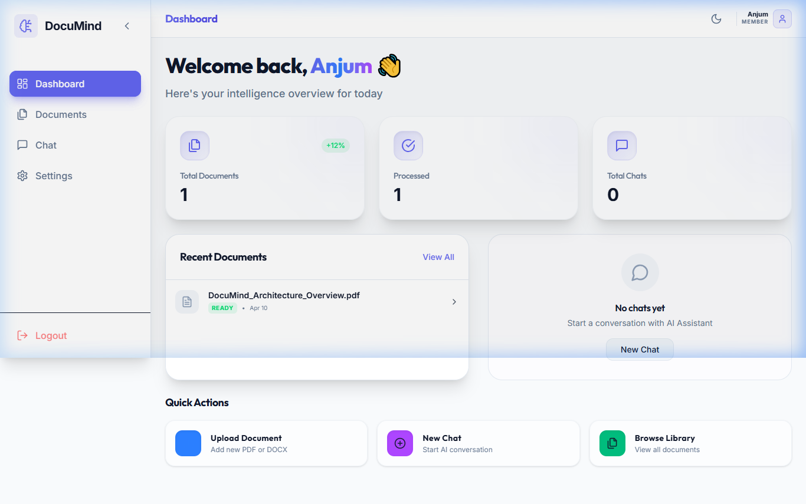
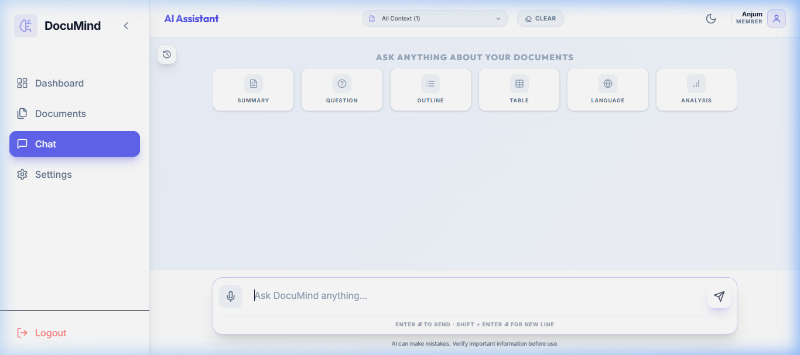

DocuMind
AI-Powered Document Intelligence Platform using RAG Architecture
The Challenge
Information Overload
Managing thousands of documents manually is impossible and prone to error.
Slow Retrieval
Finding specific information in deeply nested PDFs takes hours of manual searching.
Context Blindness
Traditional search fails to understand the actual meaning and context of queries.
The Solution: DocuMind
Leveraging Retrieval-Augmented Generation (RAG) to bridge the gap between static documents and dynamic AI.
RAG 101: Core Concepts
1. Chunks
AI models have a limited "Context Window." We break long PDFs into smaller, overlapping Chunks (e.g., 500 words each). This ensures the AI can "read" every part of the document without losing track.
2. Embeddings
We convert text into Mathematical Vectors (lists of numbers). These numbers represent the concepts in the text. Similar meanings end up close together in mathematical space.
3. RAG
Retrieval-Augmented Generation: We "Retrieve" the most relevant chunks first, then "Augment" the AI's prompt with that data. The AI generates an answer based 100% on Fact, not memory.
"RAG turns a generic AI into a specialist for YOUR data."
Project Scope
🎯 Target Audience
- 💎 Researchers & Academics
- 💎 Legal & Compliance Teams
- 💎 Corporate Knowledge Labs
💡 Primary Use-Cases
- ⚡ Semantic Search over massive PDF libraries
- ⚡ Automated summarization of technical reports
- ⚡ Fact-checked Q&A for enterprise data
Real-World Industry Applications
Legal Tech
Automated contract auditing and fast retrieval of legal precedents from case archives.
Healthcare
Querying thousands of medical journals to assist in fast diagnosis and research.
Corporate HR
Instant employee support for complex policy handbooks and internal documentation.
Education
Research
Helping students analyze dense textbooks and research papers with zero hallucinations.
"DocuMind bridges the gap between raw data and actionable intelligence."
System Architecture
React Client
Vite-powered SPA using TailwindCSS for a responsive, high-performance UI experience.
FastAPI Server
Asynchronous Python backend handling authentication, rate-limiting, and request routing.
Celery + Redis
- Redis acts as a high-speed message broker.
- Celery workers handle long-running OCR and embedding tasks.
- Prevents API blocking during batch document processing.
pgvector (DB)
- Stored in PostgreSQL 16 for reliability.
- Uses HNSW index for sub-millisecond similarity search.
- Stores document chunks as high-dimensional embeddings.
Groq Llama 3
- Hardware accelerated LPU (Language Processing Unit).
- Generates responses based on retrieved document context.
- Ensures real-time interaction even with complex queries.
Technical Stack
Project core logic & backend AI integration handler.
Reliable data storage with high-speed vector search capabilities.
Containerization for consistent deployment across all platforms.
Premium, interactive UI with real-time feedback loops.
Ultra-fast AI inference engine with native support for structured source code parsing.
Converts text into mathematical vectors for semantic search.
Fast message broker for handling heavy background AI tasks.
Real-time monitoring of API performance and system health.
Platform Capabilities
Unified Document Viewer
Preview PDFs, text, and code files with syntax highlighting directly in the app.
Smart Highlighting
Source Citations
Every answer is backed by direct quotes from your documents with page references.
Vectorized Search
Semantic search that understands "What is our revenue?" even if the word isn't in the file.
Async Processing
Background task handling for large document batches without UI freezing.
Modern UI/UX
Premium glassmorphic interface with Framer Motion animations for a professional feel.
Universal Code Intelligence
Native support for C, C++, Java, Python, JS & more — handles structured logic analysis.
Rate Limiting
Robust security and API protection ensuring stable service under heavy load.
User Management Module
Registration & Login
Secure entry with password hashing (BCrypt).
JWT Authorization
Token-based secure sessions for API access.
Ownership Isolation
Users only access their OWN uploaded documents.
Member Profiles
Personalized settings, themes, and account management.
Project Walkthrough


"Live Demo: showcasing the seamless integration between document parsing, vector retrieval, and ultra-fast AI inference on local hardware."
Future Roadmap
Database integration, vector search, and async pipeline complete.
Multi-modal support (images/OCR), user authentication, and team collaboration.
Private cloud deployment, hybrid search models, and custom LLM fine-tuning.
Implementation Deep-Dive
🖼️ Multi-modal
- • OCR Integration: Using Tesseract/EasyOCR for scanned hardware manuals.
- • Vision-Language Models: Connecting Llama 3.2 Vision to interpret diagrams.
🔐 Advanced Auth
- • JWT & OAuth2: Current foundation for secure, token-based sessions.
- • Fine-grained ACL: Access Control Lists to restrict docs to specific roles.
👥 Collaboration
- • Org-Level Indexing: Shared vector spaces for department-wide knowledge.
- • Synchronous Chat: Multiple users auditing a single document in real-time.
Conclusion & Practical Impact
Technical Achievement
Successfully implemented a distributed RAG pipeline with high-speed inference and asynchronous processing.
Real-World Value
Automates document analysis, saving up to 90% of manual research time for complex PDFs and reports.
"DocuMind demonstrates how modern AI can be grounded in private, factual data to provide reliable and verifiable insights."
DocuMind
"Unlocking the intelligence hidden in your documents."
Thank You!
Presented to: College Science & Tech Seminar